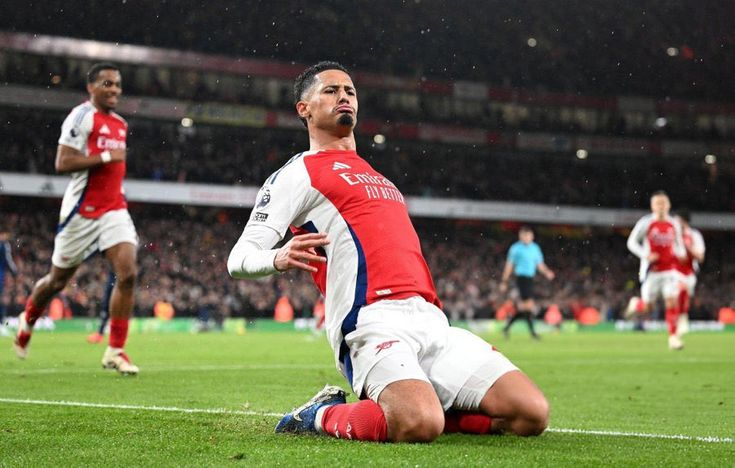

.jpeg)
Ball Mastery
Players work on first touch, passing angles, receiving under pressure, finishing, and brave attacking play.
Developing talented young footballers with the technical skill, confidence, discipline, and Arsenal identity needed to compete at the highest level.
The Arsenal Academy gives young players a clear route from foundation football through to elite youth competition. Training focuses on ball mastery, decision making, tactical understanding, personal development, and respect for the club's values.
Players work on first touch, passing angles, receiving under pressure, finishing, and brave attacking play.

Match days help players test their decisions, communicate clearly, recover quickly, and play with identity.

The academy journey is also about confidence, leadership, school work, wellbeing, and respect for others.
Young players build confidence with the ball, learn teamwork, and develop the joy of playing the Arsenal way.
Players sharpen technique, positioning, fitness, and match intelligence through structured coaching sessions.
Elite academy players prepare for senior football with advanced tactical work, competitive fixtures, and personal support.

Hale End graduate and first-team star, showing academy players what belief and hard work can become.

Academy players train with the aim of reaching first-team levels of speed, strength, focus, and professionalism.
Hale End graduate and first-team star, showing academy players what belief and hard work can become.
Click a picture to view it larger.
Use these video cards to jump into Arsenal academy and youth-team content.

Watch training-ground stories, interviews, and behind-the-scenes academy features.
Watch Videos
Follow youth match highlights, goals, and standout performances from young players.
Watch Videos
Hear from academy players and coaches about development, mentality, and match preparation.
Watch VideosPassing, receiving, dribbling, shooting, and playing under pressure.
Reading space, solving problems quickly, and making brave decisions.
Resilience, humility, leadership, discipline, and respect for teammates.
Support for life away from the pitch, including learning, wellbeing, and personal growth.
Which Arsenal academy is known as Hale End?
Follow Arsenal youth updates, attend community sessions, and keep improving your game. The journey starts with commitment, patience, and love for football.